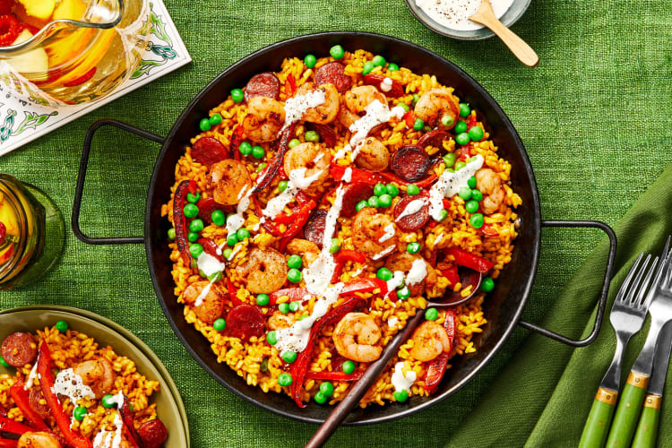

Shrimp & Chorizo Paella
Is there anything better than digging into a bountiful paella? Infused with smoky, aromatic spices and mixed with tender strips of bell pepper, juicy shrimp, and crispy chorizo—one bite of this dish will immediately transport you to the Spanish seaside (no passport required!). Best of all, it couldn’t be easier to whip up. You don’t need to build a fire in the backyard or run out to buy any fancy one-use pans. All you need is 40 minutes for pure paella bliss. FYI, it’s completely acceptable (even authentic!) to eat right out of the skillet. Now all you need is a pitcher of sangria!
Ingredients
- 1 medium Red Bell Pepper
- 3oz Dried Chorizo
- 1tsp Smoked Paprika
- 4oz Seafood Stock Concentrate
- 10oz raw Shrimp
- 1 clove of Garlic
- 3/4 cup Arborio Rice
- 1tsp Tumeric
- 2tbs Mayonnaise
- 4oz Peas
- 1tbs Olive Oil
- Salt
- Pepper
Instructions

- • Wash and dry produce. • Halve, core, and thinly slice bell pepper into strips. Thinly slice chorizo into rounds. Peel and mince garlic.

- • Heat a drizzle of olive oil in a large pan over medium-high heat. Add bell pepper and chorizo. Cook, stirring occasionally, until bell pepper is slightly softened and chorizo is lightly browned, 2-3 minutes.

- • Stir rice, half the garlic, half the paprika (you’ll use the rest later), and half the turmeric (all for 4 servings) into pan; cook until fragrant, 30-60 seconds.• Stir in 3 cups water (6 cups for 4), stock concentrates, and salt. Bring to a boil. Cook, stirring occasionally, until liquid has evaporated and rice is tender, 15-20 minutes. TIP: Add a splash more water if liquid evaporates before rice is fully cooked.

- • While rice cooks, in a small bowl, combine mayonnaise with a pinch of remaining garlic to taste. Stir in water 1 tsp at a time until mixture reaches a drizzling consistency. Season with salt and pepper.

- • Rinse shrimp* under cold water, then pat dry with paper towels. Season all over with salt, pepper, and remaining paprika. • When rice is almost done, heat a large drizzle of olive oil in a second large pan over high heat. Once pan is hot, add shrimp and cook, stirring occasionally, until opaque and cooked through, 3-4 minutes. Turn off heat.

- • Once rice is done, turn off heat and stir in peas. Taste and season with salt and pepper. Top with shrimp and drizzle with garlic aioli. TIP: Serve directly from pan for a family-style paella experience.